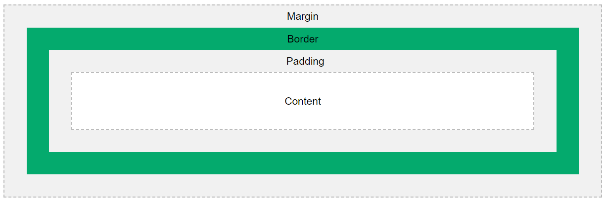

Margens no CSS
A margem é o valor fora da borda do objeto, e é definida por valores absolutos em pixels.
Padding no CSS
Padding é o valor dentro da borda do objeto, e é definida por valores absolutos em pixels.
As propriedades de margem podem ter os seguintes valores:
- auto: o navegador calcula a margem
- length: define a margem em px, pt, cm, etc.
- %: define a margem em % da largura do elemento que a contém
- inherit: define que a margem deve ser herdada do elemento pai
Algumas vezes as margens superior e inferior se juntam em uma em que o valor é o maior entre as duas margens. Isso se chama "margin collapse".
As propriedades de padding podem ter os seguintes valores:
- length: define o padding em px, pt, cm, etc.
- %: define o padding em % da largura do elemento que o contém
- inherit: define que o padding deve ser herdado do elemento pai
Se o padding for definido com a propriedade width, será preciso ajustar seu comportamento com a propriedade box-sizing, já que o tamanho do elemento será o da largura + o padding. Com box-sizing: border-box, a largura do elemento não muda.
Observação
: as propriedadesheight e width não incluem padding, bordas ou margens! Elas definem a altura e a largura da área dentro do padding, borda e margem do elemento!
Use max-width/max-height ou min-width/min-height para melhorar a visualização de elementos em telas menores ou maiores, respectivamente. Quando width é maior que max-width no mesmo elemento, max-width é usada e width ignorada.
O modelo de caixa
Ao definir as propriedades de altura e largura de um elemento com CSS, esses valores mudam apenas a área de conteúdo. Para definir corretamente a altura e a largura de elementos em um site, é preciso compreender como funciona este modelo e incluir os valores de padding e bordas.
Consulte também: Outline.